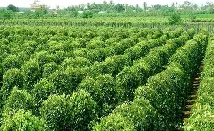

Khô Mực Phú Quốc
Mực được đánh bắt từ biển sâu Phú Quốc, phơi dưới nắng vàng giòn tan. Khi nướng lên tỏa hương thơm nức, mềm ngọt, dai vừa đủ. Đây là món quà biển cả mang đậm tình người miền đảo.

Nước Mắm Truyền Thống
Với bí quyết ủ chượp hàng trăm năm, từng giọt nước mắm cốt nguyên chất thơm nồng, đậm vị. Là linh hồn trong bữa cơm Việt, nước mắm Phú Quốc là di sản ẩm thực quý giá.

Rượu Sim Rừng
Từ những trái sim tím mọc tự nhiên trên núi rừng, rượu sim Phú Quốc có vị ngọt nhẹ, hậu cay dịu. Mỗi ly rượu là một chuyến du hành vào hồn đất đảo hoang sơ và quyến rũ.

Tiêu Sọ Phú Quốc
Được chọn lọc kỹ từ những hạt tiêu chín đỏ, tách vỏ thủ công và phơi nắng. Tiêu sọ có mùi thơm mạnh, vị cay sâu – trở thành gia vị yêu thích trong các món nướng và kho.